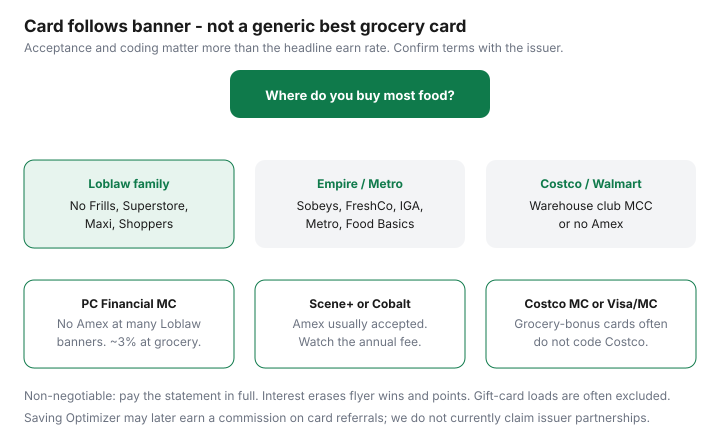

Food & Groceries · Canada
Best credit cards for Canadian groceries: match the card to your banner
Generic “best grocery card in Canada” lists ignore two boring facts. First, many Loblaw banners do not take American Express. Second, loyalty accelerators are banner-locked, and Costco usually codes as a warehouse club — so your 5× grocery category never fires. Match the card to the store family, then run a no-fee versus annual-fee worksheet. Pay the statement in full. Everything else is decoration.
Disclosure: PC Financial Mastercards, Scotiabank Scene+ cards (including Gold Amex), American Express Cobalt, the moi RBC Visa, and other grocery-earning cards are offer types. Saving Optimizer may earn a commission if we later add partner links. We do not currently claim issuer partnerships. Rates, fees, and category caps change — confirm on the issuer’s site before you apply. This is not credit advice; it is a banner-matching worksheet.
Key takeaways
- Acceptance first: Loblaw and Walmart are hostile to Amex; Costco is Mastercard-only at the warehouse.
- PC Financial cards pay in PC Optimum points at Loblaw banners. Scene+ cards pay at Empire. Moi’s RBC Visa is a Metro-family tool.
- Amex Cobalt’s grocery earn is powerful where Amex works. It does not fix a No Frills till.
- Annual-fee cards need a break-even. No-fee cards win at modest spend or mixed banners.
- Gift cards, prepaid, and warehouse-club MCCs are the usual exclusions. Interest erases every flyer win.
Banner acceptance reality (Amex gaps at Loblaw)
As of public 2026 card roundups and shopper reports (verify at your till):
- Loblaw grocery banners (No Frills, Superstore, Maxi, Provigo, many Loblaws): Visa and Mastercard. Amex commonly declined.
- Empire / Metro banners (Sobeys, FreshCo, IGA, Metro, Super C, Adonis in many locations): often all three networks.
- Walmart Canada: Visa and Mastercard, not Amex. Grocery coding is inconsistent.
- Costco Canada warehouse: Mastercard only. Online Costco.ca follows Costco’s listed methods.

PC Financial cards for Loblaw ecosystems
If No Frills or Superstore is home, a PC Financial Mastercard is the straightforward accelerator. 2026 explainers commonly quote the World Elite at 30 PC points per $1 at Loblaw grocery banners (~3% at 10,000 points = $10) and 45 points at Shoppers (~4.5%), with no annual fee and income thresholds. Lower-tier PC cards earn fewer points. Confirm the current ladder on pcfinancial.ca.
Worked example (estimate): $800/month at No Frills on World Elite → 24,000 points → $24 if redeemed at grocery 10,000 = $10. Shoppers bonus redemption events can raise that. Statement-credit redemptions can pay less. The card does nothing for you at Sobeys.
Scene+ / Scotia options for Sobeys / FreshCo
Empire banners are Scene+ country. The Scotiabank Gold American Express is the card grocery blogs lean on: public 2026 reviews describe 6 Scene+ points per $1 at Empire grocery and 5× at other eligible grocery, with an annual fee often listed around $120 and category caps (Forbes Advisor Canada and issuer materials — read the certificate of insurance and rewards terms). Scene+ points at 1,000 = $10 grocery are about 1¢ each, so 6× is a 6% headline before the fee and caps.
Break-even sketch (labelled): $120 fee ÷ 5 percentage points of extra earn versus a 1% no-fee card ≈ $2,400 of eligible grocery if the extra earn is 5 points. Real life includes dining/entertainment categories and welcome bonuses. If you do not use Empire stores, this card is a travel/dining product, not a No Frills product.
Scotiabank also issues Scene+ Visas for places Amex will not go. If you split Loblaw and Sobeys, you may need two pieces of plastic. That is annoying and still cheaper than shopping the wrong banner for points.
Amex Cobalt grocery category vs co-branded Scene+
Cobalt is a Membership Rewards card with a strong grocery and dining multiplier (commonly 5× on eligible grocery, with a monthly fee — check Amex for the current dollar amount). MR can be worth more than 1¢ if you transfer to travel partners, or about 1¢ if you treat it as simple travel. It is the wrong centrepiece for a Loblaw household. It can be excellent at Metro, Sobeys, and IGA if you already value Amex travel and you will not carry a balance.
Gold Amex vs Cobalt: Gold pays Scene+ you can burn at the grocery till. Cobalt pays MR you probably will not burn at No Frills. Choose the currency you will actually use.
No-fee vs annual-fee break-even worksheets
| Situation | Card type to price first | Why |
|---|---|---|
| Most food at Loblaw discounters | PC Financial Mastercard (no fee) | Amex often dead; PC points match the till |
| Most food at FreshCo / Sobeys / IGA | Scene+ Amex or Visa; or Cobalt | Network works; Scene+ or MR accelerators |
| Most food at Metro / Food Basics | Moi RBC Visa and/or a grocery-category MC/Visa/Amex | Moi base earn is provincial; Food Basics is offers-heavy |
| Costco-heavy | CIBC Costco Mastercard | Warehouse acceptance + 1% in-store, not grocery MCC |
| Walmart-heavy | No-fee Visa/MC with a grocery category you have tested | No Amex; coding is the trap |
| Split banners, modest spend | One no-fee card you pay in full | Two annual fees rarely pay at $400/month |
Worksheet: (annual fee) ÷ (extra earn rate versus your current no-fee card) = break-even spend. If that number is larger than last year’s grocery receipts, skip the fee. Welcome bonuses can pull the first year ahead; year two is the honest test.
Tangerine, some no-fee Scene+ cards, and simple cash-back Visas remain sane if you hate optimizing. A calm 2% grocery category you pay off beats a 5% card with interest.
Paying in full: the non-negotiable rule
Flyer savings, PC points, and Executive 2% are all smaller than a month of revolving interest. If a card tempts you to spend more, it is not a grocery card. It is a loan. Use debit or a no-fee card with autopay from a chequing account that already holds the grocery float.
Gift-card and prepaid exclusions to watch
Issuers routinely exclude gift cards, prepaid cards, money orders, and sometimes third-party delivery. Loading a Superstore gift card to “earn 5%” is a classic way to earn 0% and an argument with customer service. PC Optimum and Scene+ in-store offers also may not apply to gift-card purchases. When in doubt, buy groceries, not plastic.
Put the chosen card in the Sunday weekly system next to the loyalty app. One banner, one network, one statement, paid in full.
Sources & date stamps
- Issuer pages: PC Financial, Scotiabank Gold American Express, American Express Cobalt, CIBC Costco Mastercard, moi RBC Visa (fees and earn rates — confirm before applying; reviewed as public 2026 roundups on 16 Sep 2026).
- Ratehub grocery loyalty comparison (2026) for point redemption values.
- Milesopedia / NerdWallet Canada / Forbes Advisor Canada grocery-card summaries (2026) for acceptance patterns — still verify at your till.
Frequently asked questions
Does Loblaw take American Express?
Many Loblaw grocery banners (including No Frills, Superstore, Maxi, and similar) do not accept Amex. Shoppers Drug Mart is a separate till — do not assume. Carry a Mastercard or Visa if Loblaw is your store.
What is the best grocery card in Canada?
The best card is the one that is accepted where you shop and that you pay in full. For Loblaw-heavy households that is often a PC Financial Mastercard. For Empire/Metro households that take Amex, Scotiabank Gold Amex or Amex Cobalt can out-earn no-fee cards if the annual or monthly fee is covered by spend. Costco needs a Mastercard and usually will not pay grocery-bonus rates.
Do grocery gift cards earn bonus points?
Often no. Many issuers exclude gift cards, prepaid loads, and some third-party grocers. Read the current exclusions before you ‘manufacture’ spend.
Is Walmart coded as grocery?
Sometimes yes, sometimes as general merchandise, depending on Supercentre vs other formats and the issuer’s MCC list. Test a small purchase and read the statement. Walmart does not take Amex.
Should I carry a balance if the card has a 0% promo?
Only if you already had a plan to pay the groceries anyway and you will not spend more. Interest on a rewards card is how a 5% earn becomes a 20% loss. Paying in full is the non-negotiable rule in this guide.